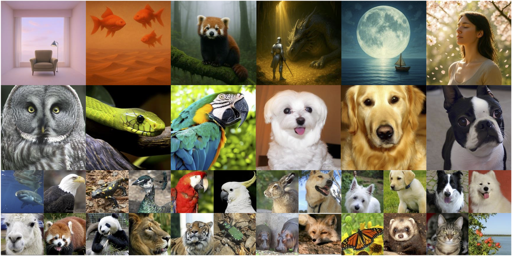

GenFirst: Generation Before Reconstruction for Stable End-to-End Latent Generative Modeling
Official PyTorch Implementation

This is a PyTorch/GPU implementation of the paper GenFirst: Generation Before Reconstruction for Stable End-to-End Latent Generative Modeling:
code@article{zheng2026genfirst, title={GenFirst: Generation Before Reconstruction for Stable End-to-End Latent Generative Modeling}, author={Zheng, Guangting and Zhang, Yiyuan and Yang, Tao and Chen, Yunpeng and Zhu, Rui and Deng, Jiajun and Zhang, Yanyong}, journal={arXiv preprint arXiv:2608.29335}, year={2026} }
What we do:
- 🚀 Simple, effective, and stable end-to-end training of VAEs with generative models (AR and Diffusion), without latent collapse.
- ⚖️ Mitigates the generation–reconstruction conflict by using our GenFirst training strategy during end-to-end training.
- 🏆 Strong generation performance: 0.97 gFID with CFG on ImageNet-256 without FD loss, and 0.90 GenEval on text-to-image generation.
- 🌐 Beyond generation: 1) extends to a shared latent space for generation and understanding, and 2) unified text–image modeling via an end-to-end diffusion.
This repo contains:
- 🪐 The end-to-end VAE + SiT trainer (train_e2e.py), the decoder-only finetune that follows it (train_decoder_ft.py), and the prior-only frozen E2E-VAE SiT trainer (Prior_only/train_prior_only.py)
- ⚡️ Both configurations from the paper:
f8d4+SiT-XL/2andf16d32+SiT-XL/1, at 256x256 and 512x512 - 🛸 Text-to-image training on the FLUX.1 VAE with MMDiT (docs/T2I.md)
- 🧠 An optional understanding objective on the latent, for a shared generation +
understanding latent space, with an ImageNet linear probe to evaluate it (docs/UND.md)
- 🔗 Unified text-image modeling: one block-causal MMDiT over image and text
latents, generating in both directions (docs/JOINT.md)
- 💥 Evaluation: 50k-sample FID/IS, plus GenEval and DPG-Bench (eval_bench/)
Note this repository is the EiT (SiT / diffusion prior) instantiation in the paper's tables. The autoregressive EAR instantiation is not included here.
Preparation
Installation
codeconda env create -f environment.yml conda activate genfirst
Or pip install -r requirements.txt (install torch first).
Dataset
Download ImageNet dataset and place it in your IMAGENET_PATH. The two stages want it in two different layouts.
The end-to-end stage reads a single HDF5 of raw images:
codepython tools/build_image_h5.py --source ${IMAGENET_PATH}/train \ --dest data --resolution 256
The prior-only stage reads a directory of cropped images, which it then encodes into cached latents:
codepython tools/build_image_dir.py \ --source=${IMAGENET_PATH}/train \ --dest=data/imagenet256/images \ --resolution=256x256 --transform=center-crop-dhariwal
See docs/DATA.md for 512x512 and the disk budget.
Download pre-trained VAE initializations
The end-to-end stage starts from an existing VAE. Place the files under pretrained/:
| Config | Source | Expected files |
|---|---|---|
f8d4 | stabilityai/sd-vae-ft-ema | pretrained/sdvae/sdvae-f8d4.pt, pretrained/sdvae/sdvae-f8d4-discriminator-ckpt.pt |
f16d32 | VA-VAE (LightningDiT) | pretrained/vavae/vavae-f16d32.pt, pretrained/vavae/vavae-f16d32-discriminator-ckpt.pt |
Training from scratch also works — drop --vae-ckpt and --disc-pretrained-ckpt.
Pretrained models
Generative models
50k-sample FID/IS against the ImageNet reference statistics in fid_stats/. The unguided columns are what the model does on its own; the guided ones use the sampling settings from Evaluation below. ImageNet 512x512 is reported with guidance only.
| Model | Resolution | gFID | IS | gFID (cfg) | IS (cfg) | Download |
|---|---|---|---|---|---|---|
| EiT, 80 prior-only epochs | 256x256 | 2.79 | 175.4 | 1.38 | 271.3 | checkpoint · weak-20ep |
| EiT, 480 prior-only epochs | 256x256 | 1.60 | 216.8 | 0.988 | 270.7 | checkpoint · weak-20ep |
| EiT, 800 prior-only epochs | 256x256 | 1.45 | 226.7 | 0.969 | 283.4 | checkpoint · weak-20ep |
| EiT, 80 prior-only epochs | 512x512 | – | – | 1.63 | 278.9 | checkpoint |
| EiT, 400 prior-only epochs | 512x512 | – | – | 1.23 | 286.1 | checkpoint |
Text-to-image models
MMDiT-XL/2 with a frozen CLIP-L text encoder, on the frozen end-to-end FLUX VAE, ending at 512x512. GenEval and DPG-Bench overall scores, no prompt rewriting. The two variants differ only in the VAE they were given (see the next table).
| Model | Resolution | GenEval | DPG-Bench | Download |
|---|---|---|---|---|
| EiT T2I, variant A | 512x512 | 0.8987 | 82.60 | checkpoint · VAE |
| EiT T2I, variant B | 512x512 | 0.8920 | 82.06 | checkpoint · VAE |
Sampling uses Euler, 50 steps, CFG 7.0 on the interval [0.35, 1.0]; see docs/T2I_EVAL.md.
Shared visual latents (generation + understanding)
MMDiT-XL/2 on a frozen Qwen3-VL ViT autoencoder (--vae-arch qwenvit) shaped end-to-end with both a generative prior and an understanding objective (SigLIP or VLM-NLL, Table 9 in the paper; see docs/UND.md).
| Model | Supervision | Resolution | rFID ↓ | PSNR ↑ | GenEval ↑ | DPG-Bench ↑ | Linear Probe Top-1 (%) ↑ | Download |
|---|---|---|---|---|---|---|---|---|
eit-qwenvit-siglip-t2i-512.pt | E2E + SigLIP | 512x512 | 0.39 | 27.64 | 0.90 | 83.76 | 79.25 | checkpoint · VAE |
eit-qwenvit-vlm-nll-t2i-512.pt | E2E + VLM-NLL | 512x512 | 0.46 | 27.19 | 0.89 | 83.49 | 81.69 | checkpoint · VAE |
Paired with vae/qwenvit-siglip-b256-s2/ and vae/qwenvit-nlltrunk-s2/ respectively.
Unified text-image modeling (JointMMDiT-XL/2)
One block-causal JointMMDiT-XL/2 over continuous text latents (Cola Text VAE) and image latents (FLUX.1 VAE), both shaped jointly in the end-to-end stage (e2e-joint-gan-l2-330k, Table 10 in the paper; see docs/JOINT.md).
| Checkpoint | Stage | GenEval ↑ | DPG-Bench ↑ | CIDEr ↑ | BLEU-4 ↑ | METEOR ↑ | ROUGE-L ↑ | SPICE ↑ | CLIPScore ↑ | Download |
|---|---|---|---|---|---|---|---|---|---|---|
eit-joint-e2e-text-e2e-img-512-sft.pt (T2I) / eit-joint-e2e-text-e2e-img-512.pt (I2T) | E2E-joint text + image VAEs | 86.57 | 72.68 | 33.28 | 7.76 | 17.74 | 34.16 | 11.81 | 57.97 | T2I ckpt · I2T ckpt · VAE |
Paired with vae/e2e-joint-gan-l2-330k/.
End-to-end VAEs
| VAE | Pairs with | End-to-end stage trained on | rFID | PSNR | SSIM | LPIPS | Download |
|---|---|---|---|---|---|---|---|
f8d4, SD-VAE init | SiT-XL/2 @256 | ImageNet, SiT-XL/2 | 0.57 | 25.13 | 0.71 | 0.14 | Hugging Face |
f16d32, VA-VAE init (decoder-ft) | SiT-XL/1 @256 | ImageNet, SiT-XL/1 | 0.36 | 25.82 | 0.74 | 0.12 | Hugging Face |
f16d32, VA-VAE init (no dec-ft, @512) | SiT-XL/1 @512 | ImageNet, SiT-XL/1 | – | – | – | – | Hugging Face |
f8d16, FLUX.1 init, variant A | MMDiT-XL/2 T2I | ImageNet, SiT-XL/2 | 0.23 | 29.43 | 0.85 | 0.07 | Hugging Face |
f8d16, FLUX.1 init, variant B | MMDiT-XL/2 T2I | text-to-image data, MMDiT-L/2 | 0.21 | 29.37 | 0.85 | 0.07 | Hugging Face |
qwenvit-siglip-b256-s2 | MMDiT-XL/2 T2I + Probe | text-to-image data, MMDiT-L/2 + SigLIP | 0.39 | 27.64 | – | – | Hugging Face |
qwenvit-nlltrunk-s2 | MMDiT-XL/2 T2I + Probe | text-to-image data, MMDiT-L/2 + VLM-NLL | 0.46 | 27.19 | – | – | Hugging Face |
e2e-joint-gan-l2-330k (image + text) | JointMMDiT-XL/2 | text-to-image / image-to-text, JointMMDiT-L/2 | – | – | – | – | Hugging Face |
f8d32, FLUX.2 init (s3-20k, @512x512) | SiT-XL/2 / MMDiT-XL/2 | aspect-ratio bucketed web/high-res/OCR, SiT-XL/2 + dec-ft | 0.041 | 36.46 | 0.95 | 0.026 | Hugging Face |
Each end-to-end VAE release contains the VAE and its latent statistics, which must be kept together:
code<name>/ <name>.pt VAE weights <name>.safetensors VAE weights in diffusers safetensors format (FLUX.2 release) <name>-latents-stats.pt latent normalization (scale + bias) <name>-discriminator-ckpt.pt discriminator, only needed to resume the end-to-end stage
For the released FLUX.2 end-to-end VAE (vae/e2e-vae-flux2-sitxl2-auxkl2p5e8-s3-20k/), the per-channel latent normalization parameters ((z - shift_factor) * scaling_factor) are also shipped in config.json and vae_params.json:
bash--vae_pth=vae/e2e-vae-flux2-sitxl2-auxkl2p5e8-s3-20k/e2e-vae-flux2-sitxl2-auxkl2p5e8-s3-20k.safetensors --model.vae.scaling_factor=[0.887221,0.886926,0.887096,0.881914,0.886901,0.887307,0.886685,0.886833,0.886540,0.886646,0.887031,0.887073,0.887381,0.886768,0.887299,0.885674,0.886466,0.886795,0.886979,0.886519,0.886949,0.886949,0.887036,0.886828,0.887344,0.887004,0.886816,0.886799,0.887354,0.887523,0.887012,0.886643] --model.vae.shift_factor=[-0.000623,0.000143,0.000282,0.001599,-0.001093,-0.000477,0.000855,-0.000830,-0.000883,0.001076,-0.000417,0.000200,0.000626,-0.000649,-0.000137,0.001453,-0.000816,-0.000307,-0.000290,0.000662,0.000484,0.000993,0.000574,-0.000139,-0.000914,0.000578,-0.000691,-0.000323,0.000619,-0.000606,-0.000372,0.000437]
Multi-round reconstruction on ImageNet 512x512
Iterative posterior-mode reconstruction over the 50,000 ImageNet validation images at 512x512 (1x, 3x, 5x, 10x, and 20x encode–decode passes, each round scored against the original image without intermediate uint8 quantization):
E2E FLUX.2 VAE (e2e-vae-flux2-sitxl2-auxkl2p5e8-s3-20k, 50,000 images)
| Metric | 1× | 3× | 5× | 10× | 20× |
|---|---|---|---|---|---|
| MSE ↓ | 0.000402 | 0.000728 | 0.001263 | 0.003575 | 0.012387 |
| MAE ↓ | 0.011489 | 0.015775 | 0.021253 | 0.037690 | 0.075765 |
| RMSE ↓ | 0.020047 | 0.026990 | 0.035541 | 0.059795 | 0.111296 |
| rFID ↓ | 0.04 | 0.11 | 0.24 | 1.72 | 18.57 |
| PSNR ↑ | 36.46 | 33.42 | 30.80 | 25.93 | 20.05 |
| SSIM ↑ | 0.9531 | 0.9310 | 0.8998 | 0.7895 | 0.5149 |
| LPIPS ↓ | 0.0261 | 0.0570 | 0.1018 | 0.2486 | 0.4970 |
FLUX.2 VAE — original (baseline)
| Metric | 1× | 3× | 5× | 10× | 20× |
|---|---|---|---|---|---|
| MSE ↓ | 0.000473 | 0.0011 | 0.0023 | 0.0081 | 0.030 |
| rFID ↓ | 1.35 | 4.24 | 8.43 | 25.71 | 96.62 |
| PSNR ↑ | 35.50 | 31.14 | 27.82 | 22.12 | 15.95 |
| SSIM ↑ | 0.9433 | 0.9020 | 0.8412 | 0.6462 | 0.3492 |
| LPIPS ↓ | 0.0306 | 0.0760 | 0.1383 | 0.3244 | 0.5771 |
Point the prior-only stage at one with VAE_CKPT / LATENTS_STATS to skip the end-to-end stage entirely; see Prior-only stage.
Usage
End-to-end stage: train the VAE jointly with a SiT prior
GenFirst is a two-phase schedule over the prior weight λ_prior and the entropy weight λ_ent, which are kept equal throughout. Phase 1 forms the latent geometry; phase 2 drops both weights 10x so reconstruction recovers detail.
codebash scripts/train_e2e.sh # phase 1: 0 -> 400k steps, λ = 0.1 PHASE=2 bash scripts/train_e2e.sh # phase 2: 400k -> 600k steps, λ = 0.01
That runs f8d4 + SiT-XL/2 at 256x256 on 8 GPUs. Override anything from the environment:
codeVAE=f16d32 bash scripts/train_e2e.sh # f16d32 + SiT-XL/1 NPROC=8 BATCH_SIZE=256 bash scripts/train_e2e.sh REPORT_TO=none bash scripts/train_e2e.sh # disable wandb
| Variable | Default | |
|---|---|---|
PHASE | 1 | 1/2 are the 256 phases |
VAE | f8d4 | f8d4 or f16d32; picks the matching SiT automatically |
RESOLUTION | 256 | the end-to-end stage is 256 only |
DATA_DIR | data | end-to-end HDF5 from tools/build_image_h5.py |
NPROC | 8 | GPUs per node |
BATCH_SIZE | 256 | global batch |
PRIOR_WEIGHT | 0.1 / 0.01 | λ_prior, i.e. --vae-diffusion-coeff |
REPORT_TO | wandb | set to none to disable logging |
Phase 2 resumes phase 1 in place, keeping optimizer, EMA and discriminator state, so the weight drop lands on a warm run. The 400k/600k step counts assume the paper's global batch of 256 -- if you change BATCH_SIZE, scale them to keep the 80 + 40 epochs.
If a run looks unstable, do not lower --latent-reg-weight on its own. That removes the force holding the posterior open while leaving the prior-fitting force intact, which is exactly the collapse condition. The two weights move together.
Prior-only stage: freeze the VAE and train a new SiT
The prior-only stage freezes the VAE, caches its latents, and trains the model you actually evaluate for 4M steps (800 epochs). Three steps, run in order:
codecd Prior_only # 1. pull the VAE + latent statistics out of an end-to-end checkpoint E2E_CKPT=../exps/e2e-f8d4-sitxl2-256-phase2/checkpoints/0600000.pt \ bash scripts/run_prior_only_pipeline.sh extract # 2. cache the VAE's latents for the whole dataset bash scripts/run_prior_only_pipeline.sh encode # 3. train SiT on the cached latents, 4M steps bash scripts/run_prior_only_pipeline.sh train
Or starting from a released VAE instead of your own end-to-end run skips step 1:
codeexport VAE_CKPT=/path/to/vae.pt LATENTS_STATS=/path/to/vae-latents-stats.pt bash scripts/run_prior_only_pipeline.sh encode bash scripts/run_prior_only_pipeline.sh train
VAE_ARCH and RESOLUTION have to agree across all three steps -- the extraction directory, the latent cache and the experiment name are all derived from them, so a step that disagrees quietly reads or writes the wrong path. export them once rather than repeating them per command. To continue an interrupted run, pass the step to resume from:
codeRESUME_STEP=1500000 bash scripts/run_prior_only_pipeline.sh train
One extra step worth taking
A 10k-step decoder-only finetune gives noticeably better results.
codeINIT_CKPT=exps/e2e-f8d4-sitxl2-256-phase2/checkpoints/0600000.pt \ bash scripts/train_decoder_ft.sh
Then point step 1 above at exps/decoder-ft-f8d4-256/checkpoints/0010000.pt instead; the call is the same. See docs/DECODER.md.
Which checkpoints need extraction?
train_prior_only.pyandtrain_t2i_frozen.pycheckpoints are already in
evaluation format. Pass the saved .pt directly to --ckpt; do not rewrite or strip its state dict.
- Class-conditional
train_e2e.pycheckpoints can be passed directly to the
top-level generate.py; all train_e2e.py and train_decoder_ft.py checkpoints can be passed directly to reconstruction evaluation. To use either checkpoint's VAE with a separately trained prior, run the extract step above once. It writes the standalone VAE and matching latent statistics expected by prior training and sampling.
- Released VAE bundles are already extracted. Users downloading them skip
extract and pass the VAE .pt plus -latents-stats.pt directly.
The extraction implementation is save_vae_weights.py; run_prior_only_pipeline.sh extract is its documented wrapper.
Evaluation
FID and IS come from torch-fidelity following MAR.
scripts/eval_fid.sh samples 50k images and then scores them. All the runs below share this setup:
codecd Prior_only export VAE_ARCH=f16d32 # f8d4 works the same way export EXP_NAME=prior-only-e2e-f16d32-sitxl1-256 export VAE_CKPT=extracted_vae/e2e-f16d32/e2e-f16d32.pt export LATENTS_STATS=extracted_vae/e2e-f16d32/e2e-f16d32-latents-stats.pt
Sampling is SDE with 250 steps throughout. At batch 256, one ImageNet epoch is 5,000 steps, so the epoch counts in the tables map onto CKPT_STEP directly.
Without guidance.
codeCKPT_STEP=400000 CFG_SCALE=1.0 bash scripts/eval_fid.sh # 80 epochs, gFID 2.79 CKPT_STEP=2400000 CFG_SCALE=1.0 bash scripts/eval_fid.sh # 480 epochs, gFID 1.60 CKPT_STEP=4000000 CFG_SCALE=1.0 bash scripts/eval_fid.sh # 800 epochs, gFID 1.45
With guidance. Guidance points away from a deliberately weak model -- the 20-epoch checkpoint of the same run -- with CFG applied on top (autoguidance). Passing WEAK_CKPT is what turns it on; without it the script does plain CFG.
codeexport WEAK_CKPT=exps/${EXP_NAME}/checkpoints/0100000.pt CKPT_STEP=2400000 bash scripts/eval_fid.sh # 480 epochs, gFID 0.988 CKPT_STEP=4000000 bash scripts/eval_fid.sh # 800 epochs, gFID 0.969
The paper uses autoguidance 1.3, CFG_SCALE=1.5 and a guidance interval of [0.2, 0.7] for all ImageNet-256 guided rows:
codeCKPT_STEP=400000 bash scripts/eval_fid.sh # 80 epochs, gFID 1.38
512x512 reuses the frozen 256 f16d32 VAE with SiT-XL/1 and is reported with plain CFG only -- no weak model, CFG_SCALE=2.5, interval [0.2, 0.8], which is what RESOLUTION=512 selects.
codeRESOLUTION=512 EXP_NAME=prior-only-e2e-f16d32-sitxl1-512 \ VAE_CKPT=extracted_vae/e2e-f16d32-nodecft/e2e-f16d32-nodecft.pt \ LATENTS_STATS=extracted_vae/e2e-f16d32-nodecft/e2e-f16d32-nodecft-latents-stats.pt \ CKPT_STEP=2000000 bash scripts/eval_fid.sh # 400 epochs, gFID 1.23
VAE reconstruction. rFID, PSNR, SSIM and LPIPS over posterior-mean reconstructions of the 50k ImageNet validation images, following latent-diffusion. rFID is measured against those validation images rather than a training-set reference, so both sets are written to disk (about 15 GB at 256).
codepython eval_recon.py --vae-arch f16d32 \ --vae-ckpt pretrained/extracted_vae/e2e-f16d32/e2e-f16d32.pt \ --data-dir /data/imagenet/val --out-dir recon_eval/e2e-f16d32
For 512x512 multi-round reconstruction (1x, 3x, 5x, 10x, 20x) without writing 300k intermediate PNGs to disk, use scripts/eval_vae_multiround_full.py:
bashtorchrun --standalone --nproc_per_node=8 scripts/eval_vae_multiround_full.py \ --label e2e-flux2-s3-20k \ --vae-arch flux2 \ --vae vae/e2e-vae-flux2-sitxl2-auxkl2p5e8-s3-20k/e2e-vae-flux2-sitxl2-auxkl2p5e8-s3-20k.safetensors \ --data /data/imagenet/val \ --resolution 512 \ --rounds 1 3 5 10 20 \ --out recon_eval/multiround
Three-stage FLUX.2 E2E VAE training (train_e2e_vae.py)
To train the 32-channel f8d32 FLUX.2 VAE end-to-end on aspect-ratio-bucketed parquet data (1:2 to 2:1, fixed pixel area side^2) across three stages:
- Stage 1 (256² area, 100k steps, global batch 1024): Joint VAE + unconditional
SiT-XL/2with 2D dynamic sin-cos positional embeddings (models/sit_e2e.py), L1 + LPIPS (no GAN),λ_prior = λ_ent = 0.1, auxiliary KL weight1e-6, initialized from FLUX.2 VAE. - Stage 2 (512² area, 70k–100k steps, global batch 256): High-resolution + OCR parquet mixture, GAN enabled from step 40k,
λ_prior = λ_ent = 0.01, auxiliary KL weight scaled by latent volume and entropy ratio to2.5e-8. - Stage 3 (512² area, 20k steps, global batch 512): Decoder-only finetune (
--mode decoder) with the encoder frozen, L1 + LPIPS + GAN (enabled from step 1k), initialized from the Stage 2 70k checkpoint.
bash# Stage 1: low-res E2E (area 256^2) STAGE=1 FLUX2_VAE=/path/to/flux2-vae DATA_S1=configs/vae_data/stage1_mix.json \ bash scripts/train_e2e_vae.sh # Stage 2: high-res E2E (area 512^2, aux KL 2.5e-8) STAGE=2 DATA_HI=configs/vae_data/stage23_highres.json \ bash scripts/train_e2e_vae.sh # Stage 3: decoder-only GAN finetune (area 512^2, encoder frozen, 20k steps) STAGE=3 S2_INIT_STEP=70000 S3_STEPS=20000 DATA_HI=configs/vae_data/stage23_highres.json \ bash scripts/train_e2e_vae.sh
Or run VAE_ARCH=flux2 with the fixed-resolution ImageNet / T2I scripts (scripts/train_t2i_e2e.sh and Prior_only/scripts/train_t2i_prior_only.sh).
Text-to-image is scored on GenEval and DPG-Bench with Euler, 50 steps and CFG 7.0 on the interval [0.35, 1.0]. Those two stacks are heavy and version sensitive, so they live in their own environment -- see docs/T2I_EVAL.md.
All of the above sample exactly 50 images per class, shuffled across the run. To just look at samples instead, run generate.py with a small --num-fid-samples and --label-sampling=random on a single GPU, or use the top-level generate.py for an end-to-end checkpoint. More detail, including how to score against your own reference statistics, is in docs/EVAL.md.
512x512
512 is not a run from scratch. The reported numbers reuse the f16d32 VAE from the 256 end-to-end stage unchanged and frozen, and train only a new SiT-XL/1 on the 512 latents -- so 512 is a prior-only run, with no end-to-end stage of its own.
codecd Prior_only export VAE_ARCH=f16d32 RESOLUTION=512 export VAE_NAME=e2e-f16d32-nodecft EXP_NAME=prior-only-e2e-f16d32-sitxl1-512 export E2E_CKPT=../exps/e2e-f16d32-sitxl1-256-phase2/checkpoints/0600000.pt bash scripts/run_prior_only_pipeline.sh extract bash scripts/run_prior_only_pipeline.sh encode # re-encode at 512 MAX_TRAIN_STEPS=2000000 bash scripts/run_prior_only_pipeline.sh train # 2M steps (400 epochs)
encode has to be re-run: the latent cache is keyed on resolution, and feeding a 256 cache to a 512 run fails silently rather than loudly.
The 512 numbers decode with the end-to-end decoder, not the finetuned one, so the VAE is extracted under its own name. Leaving VAE_NAME at its default would write into extracted_vae/e2e-f16d32, overwriting the decoder-finetuned VAE that the 256 evaluation decodes with. The encoder is frozen during the finetune, so both VAEs produce the same latents and only the decoder differs.
Multi-node
The scripts use torchrun --standalone, which is single-node. For multi-node, swap that for your launcher's rendezvous arguments and divide BATCH_SIZE across nodes to keep the global batch at 256:
codetorchrun \ --nnodes="${NNODES}" --node_rank="${NODE_RANK}" \ --master_addr="${MASTER_ADDR}" --master_port="${MASTER_PORT}" \ --nproc_per_node=8 \ train_e2e.py ...
--standalone picks a random free rendezvous port, which is what avoids the EADDRINUSE you get from the default 29500 when two jobs share a node. If you drop it, choose ports deliberately.
Monitoring
Worth watching beyond the loss curves:
latent/z_perdim_std, and the per-dimension histogram behind it. This is the collapse detector: healthy training keeps a spread across channels, while collapse shows up as the whole histogram sliding toward zero, usually well before FID reacts.eval/psnrandeval/rfid, logged every--eval-steps(50k by default) over the validation images atEVAL_DATA_DIR. Expect these to get worse during phase 1 than a reconstruction-only VAE would give you. That is the intended trade, and phase 2 recovers part of it. These run on a subset and are a relative proxy, not the 50k-sample numbers from the evaluation section.--eval-at-startadds a tiny evaluation at step 1 (--eval-smoke-samplesimages, 64 by default) so a broken evaluation path fails in the first minute instead of 50k steps in.scripts/train_e2e.shpasses--no-eval-at-start, so drop that flag to opt in.
Other recipes
Three variants build on the same two stages. Each has its own document with the full command sequence, data preparation and evaluation.
- Text-to-image — See docs/T2I.md and docs/T2I_EVAL.md.
- Understanding on the latent — toward a shared latent space for both generation and understanding. See docs/UND.md.
- Unified text-image modeling — unified text-image modeling via a end-to-end diffusion. See docs/JOINT.md.
Documentation
| docs/DATA.md | dataset preparation, VAE initializations, disk budget |
| docs/DECODER.md | the optional decoder finetune |
| docs/EVAL.md | FID/IS, guidance settings, VAE reconstruction metrics |
| docs/T2I.md | text-to-image data and training |
| docs/T2I_EVAL.md | GenEval / DPG-Bench setup and commands |
| docs/UND.md | understanding objective, linear probe, Qwen3-VL tower |
| docs/JOINT.md | unified text-image modeling, both stages, sampling |
Acknowledgements
Built on REPA and REPA-E. The dataset and latent-caching tooling in tools/ follows the layout conventions established by EDM2, but shares no code with it. FID and IS are computed with torch-fidelity against MAR's ImageNet reference statistics, following MAR; the reconstruction metrics follow latent-diffusion.
Licence
The code written for this project is MIT (LICENSE). This is a derivative work, so two further notices apply and must be kept: Prior_only/LICENSE (the vendored REPA fork) and the per-component list in NOTICE.
Read NOTICE before you build on this repository. Not everything here is MIT: the vendored Meta encoders and samplers trace back to CC BY-NC 4.0 projects, and their headers point at a licence file that no longer describes them. NOTICE lists those files and explains what is and is not settled about them.
The data preprocessing previously vendored NVIDIA EDM2 code under CC BY-NC-SA 4.0. It has been replaced by the MIT-licensed tools in tools/, written against this repository's own dataset loaders, so no component here now carries a licence that forbids commercial use outright.
The released model weights are CC BY-NC 4.0 — non-commercial research use only, which is stricter than the licence on the code. MODEL_CARD.md states their terms, intended use and limitations. Datasets carry their own terms as well.
Security
Loading a checkpoint runs arbitrary code, so only load .pt files and Hugging Face repositories you trust. docs/SECURITY_NOTES.md explains that, and documents why requirements.txt and environment.yml pin different versions.
To report a vulnerability, follow SECURITY.md: send it to the ByteDance security team rather than opening a public issue.
Contact
Questions and issues are welcome through GitHub Issues or mail(zgt@mail.ustc.edu.cn).